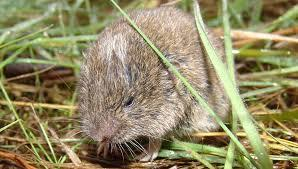
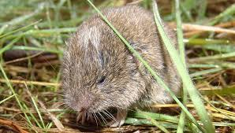

As salinas litorais, enquanto habitats artificiais, não estão diretamente sujeitas à influência das marés, apresentando uma notável diversidade de espécies de aves ao longo de todo o ano. A preferência das aves pelas salinas de Aveiro pode ser atribuída a diversos fatores, destacando-se a sua localização costeira, a ausência de invernos rigorosos, a disponibilidade de água ao longo de todo o ano e um forte gradiente de salinidade, onde os cristalizadores possuem um nível de salinidade superior aos viveiros.
A permanência da água e o clima ameno proporcionam condições ideais para a disponibilidade de alimento durante todo o ano, permitindo a presença de populações de aves invernantes, estivais e migratórias. A presença de pequenos peixes e caranguejos favorece a presença de garças, gaivotas e outras aves. As plantas aquáticas, como o moliço, constituem fonte de alimento para anatídeos como o pato-real e o mergulhão. A diversidade de insetos sustenta uma comunidade variada de aves limícolas.
Os sapais e prados marinhos são habitats essenciais nos estuários, destacando-se na Ria de Aveiro. Os prados marinhos, predominantemente ocupados pelo sirgo (zostera noltei), estendem-se por zonas intertidais e áreas mais profundas. Nas regiões marginais, em solos lodosos e arenosos, surgem os sapais, ricos em plantas tolerantes ao sal. Reconhecido como uma das zonas mais produtivas da biosfera, o sapal beneficia da chegada natural de nutrientes pelo movimento das marés, sedimentação e decomposição de organismos
O caniçal proporciona condições propícias para abrigo e nidificação de diversas espécies aquáticas, especialmente aves, oferecendo proteção contra predadores terrestres, reduzindo a influência das variações do nível da água e abrigando-se do vento. Essas condições tornam alguns caniçais essenciais para a nidificação de várias espécies, sendo que na Ria de Aveiro, duas espécies vulneráveis escolhem essencialmente os caniçais para esse fim: 50% da população nacional de garça-vermelha (Ardea purpurea) e 30% da população nacional de águia-sapeira (Circus aeruginosus). Além dessas, outras espécies como a toutinegra, o rouxinol-bravo e o rouxinol-grande-dos-caniços também podem ser encontradas nos caniçais.
Os prados marinhos da Ria de Aveiro desempenham o papel de "maternidades" naturais para diversos organismos marinhos. A estrutura proporcionada pelos caules e folhas das plantas, juntamente com a disponibilidade abundante de fontes de alimento, faz dos prados marinhos locais ideais para o crescimento de muitas espécies de peixes e crustáceos, alguns dos quais possuindo elevado valor comercial. Nos sapais, encontramos diversos invertebrados, como caranguejos, anelídeos e moluscos.
Dentro das salinas, especialmente nos cristalizadores, pode ocorrer a presença de um crustáceo denominado Artemia salina. Este pequeno crustáceo alimenta-se de uma microalga laranja-avermelhada, a Dunaliella salina, que é rica em carotenoides. Ambos esses organismos conseguem sobreviver em ambientes com elevada concentração de sal na água, que nos cristalizadores pode ultrapassar os 300g/l.


 
